33 Essential Cyberpunk Movie
The following list is not meant to be a comprehensive list of all that is Cyberpunk. Instead, the following movies are those which have left a lasting impression on me. While not all are pure cyberpunk (if there is such a thing), each features elements of cyberpunk in some way, shape, or form. So, without further ado, here is the list of my most essential cyberpunk movies.
Blade Runner (1982)
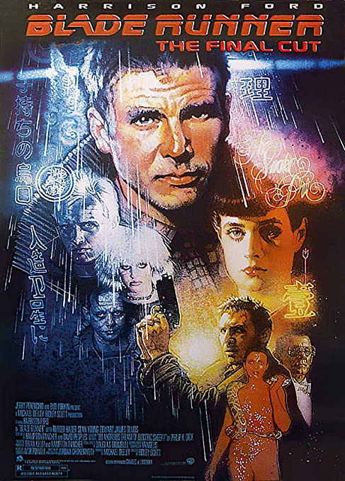
Although I hadn't even heard of cyberpunk the first time I watched Blade Runner, it is widely considered one of the most influential the genre has to offer. It's a terrific movie with a great story supported by a great cast. I actually enjoy it considerably more than Do Androids Dream of Electric Sheep - the Philip K. Dick story for which the movie is based. That being said, as you scroll through this list, you'll begin to see just how influential Philip K. Dick has been on cyberpunk.
Robocop (1987)

I actually can't remember how old I was when I first saw Robocop, but I'm sure it was too young for the level of violence present in the film. Regardless, Robocop remains an all time favorite and a movie I watched endlessly as a teen.
A police officer is killed in combat and transformed by scientists from the company that leads the police force into an ultra-sophisticated cyborg to be used in the fight against crime in the city of Detroit. However, despite having his memory erased, memories haunt him and drive him to seek revenge.
Akira (1988)
After watching Ghost in the Shell, it sparked my interest in anime, so I decided to check out Akira, which had a very promising looking cover. To be honest, I did not care much for Akira at the time, and later barely even remembered watching it, but over the years I kept telling myself I'd eventually go back to see if it was because I was too young to appreciate it. I actually watched it in the last couple years and think I understand what I didn't like about it; the movie is disturbing. That being said, I am much more appreciate of the movie, especially considering it was made in 88, years ahead of its time. Although some of the characters are one-dimensional and obnoxious, it's worth seeing for the art alone.
Total Recall (1990)
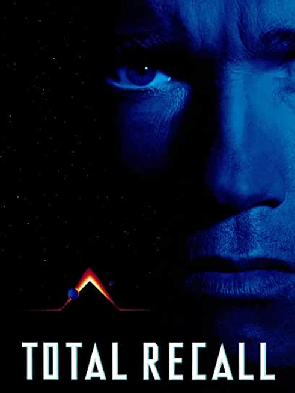
Verhoeven followed up Robocop with Total Recall, another movie based on a Philip K. Dick story: We Can Remember it for You Wholesale. When I watched this movie as a child, I found the plot thoroughly confusing, but, at the time, I didn't mind so much because there was plenty of action to distract away from the story. After all, it starred Arnold Schwarzenegger, the same guy who had provided so much entertainment in movies like Conan the Barbarian, The Terminator, Red Sonja, Commando, and Predator. But, even though there is plenty of action to be seen, the story is actually far more thought provoking than it gets credit.
Hardware (1990)
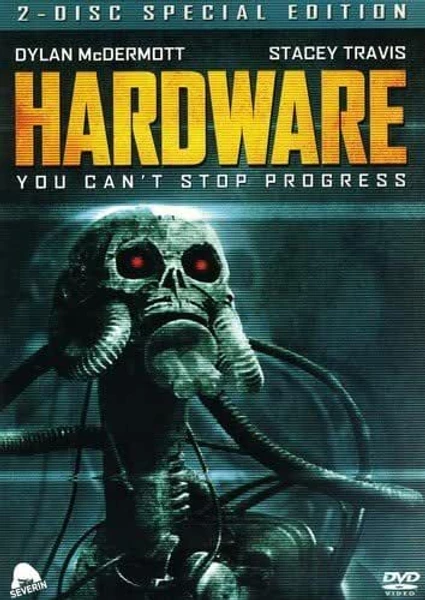
Although Hardware is far from my favorite entry on this list, it has a very cool setting that left me wanting more. The setup is pretty basic thriller fare, but the world it is set in is very interesting a unique.
The head of a cyborg reactivates, rebuilds itself, and goes on a violent rampage in a space marine's girlfriend's apartment. The head of a cyborg reactivates, rebuilds itself, and goes on a violent rampage in a space marine's girlfriend's apartment.
Nemesis (1992)
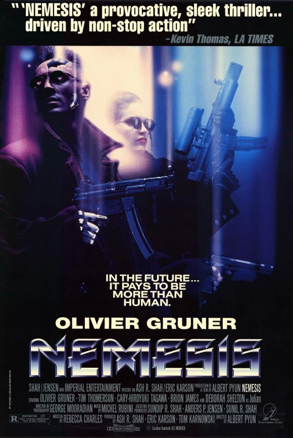
Okay, this movie definitely needs a disclaimer because it has some glaring problems that are immediately apparent within minutes of viewing it. The dialogue is unintentionally laughable at times and the writing/plot has more holes than a slice of Swiss cheese, but if you can get past these issues, this movie has a lot to offer for fans of cyberpunk. It's got cyborgs. It's action packed. It's got some cool special effects (though not all are of the same quality), and its overall a fun viewing experience as long as one doesn't go in expecting a movie on the same caliber as The Matrix.
Demolition Man (1993)
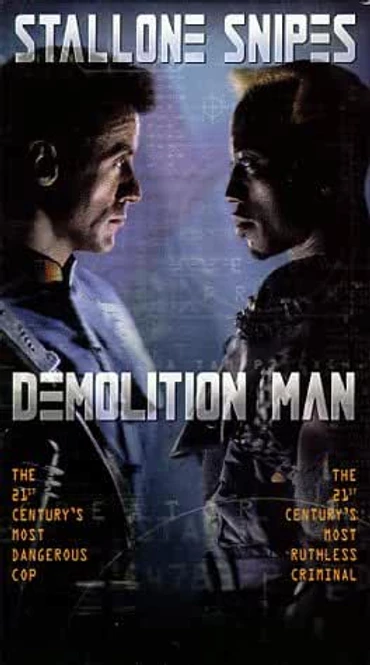
Admittedly, this movie is a bit ridiculous, but it's also a ton of fun, once you are able to suspend disbelief for the entire runtime. Also, it only loosely meets the high tech/low life qualifications I have for cyberpunk, but I'm including it on the lst because it's my list.
Officer John Spartan and violent outlaw Simon Phoenix are sentenced to a frozen incarceration known as CryoPrison. When Spartan is finally unfrozen 36 years later, it's already 2032, and Los Angeles is now a pacifist utopia called San Angeles. But with Phoenix on the loose again, Spartan must collaborate with a future policewoman, Lenina, to apprehend the killer.
Judge Dredd (1995)
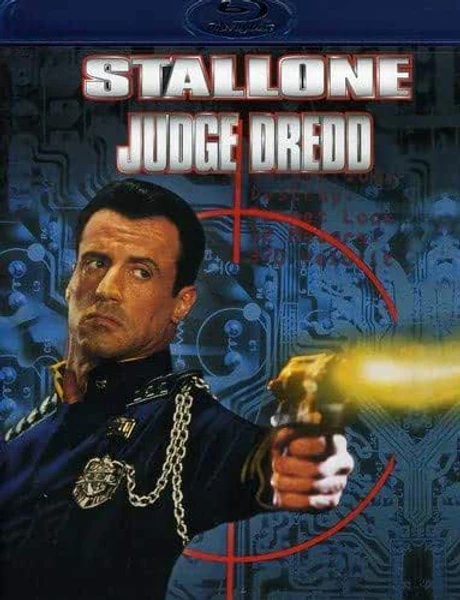
Another Stallone flick, though this one is a much bigger mess from start to finish. It deviates pretty heavily from the comics and it's tone is not nearly as dark or violent, but it meets my simple cyberpunk standards and was undoubtedly influential in my own personal life.
The world completely changed in the third millennium. The law collapsed and society was ruled by a force that acts as judge, jury and executioner. Dredd, the most legendary of judges, is accused of murder and tries to prove his innocence.
Screamers (1995)
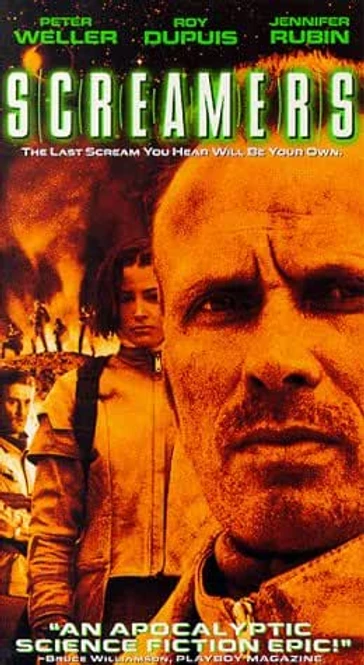
This movie may be low budget, but it has enough talent to keep it entertaining. It stars Peter Weller - Robocop himself - and was based off a story by Philip K. Dick (Second Variety) and written for the screen by Dan O'Bannon - of Alien fame - and Miguel Tejada-Flores, who interestingly enough also had a hand writing movies as diverse as Revenge of the Nerds and The Lion King. Although some of the acting leaves much to be desired, its an absolute classic in my book.
Johnny Mnemonic (1995)
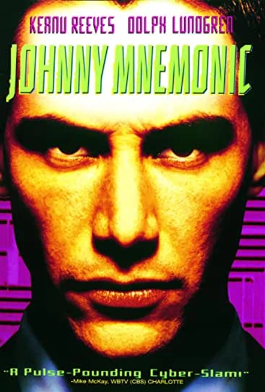
A pre-Matrix Keanu Reeves stars in this cyberpunk movie written by William Gibson. Although the movie is not the greatest the genre has to offer, it does have a cool atmosphere and it's stuck with me over the years. Also, I've got to believe it helped Reeves get the part of Neo, which is influential in and of itself.
By 2021, half the world's population suffers from a fatal disease called "NAS". Johnny, a cyber messenger, is hired to carry the chip with healing data inside his brain to Newark, being chased by greedy businessmen.
Ghost in the Shell (1995)
I picked this up on a whim back when it first his VHS. I believe it's the first anime I ever watched and, though I didn't appreciate it (or fully understand it) much at the time, there are elements that have really stuck with me over the years.
The world, in 2029, has become a highly computerized place, to the point where human beings can access extensive networks of information with their cyber-brains. Cyber agent Major Motoko is the leader of the secret service unit Shell Squad, responsible for fighting crime. Motoko was so modified that almost her entire body is robotic. As a human, she would only have left a ghost of herself.
Strange Days (1995)
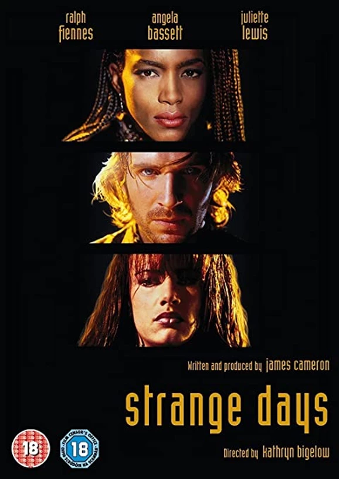
This dark cyberpunk thriller has a great cast including Ralph Fiennes, Angela Bassett, Juliette Lewis, a several other familiar faces. Upon first viewing Strange Days back when it was released to video, I remember finding the movie's plot hard to follow, but much of that can probably be attributed to a young and immature mind. I've seen it a couple times since its original release and have come to appreciate the movie its cool cyberpunk setting. Also, of note, James Cameron wrote this movie, which was released between True Lies and Titanic.
Dark City (1998)
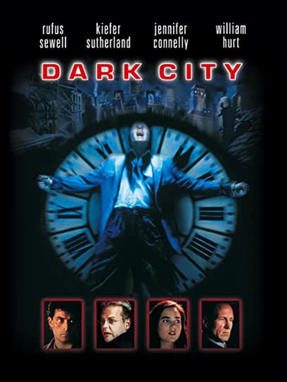
This thought-provoking noir cyberpunk is fascinating and deserves far more credit that it receives. It's got a great cast and the direction by a post-The Crow Proyas is excellent as well.
In a city where night is eternal, John Murdoch is chased by a police inspector suspected of murder. Without fully understanding the situation in which he finds himself, due to the amnesia that affects him, he starts looking for answers to the enigmas of his world with the help of Dr. Daniel P. Schreber. The closer he gets to the truth, the more dangerous his situation becomes as he becomes the target of strange entities with extraordinary powers.
Cowboy Bebop (1998-1999), Cowboy Bebop: The Movie (2001)
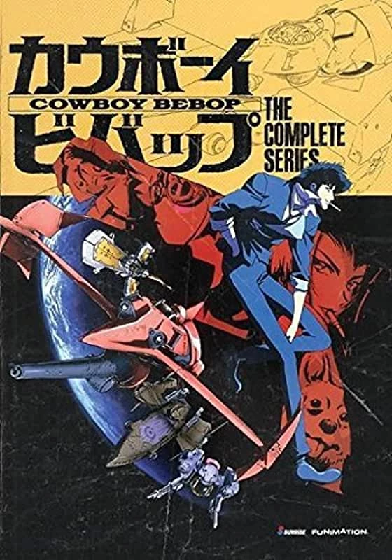
More than any other entry on this list, Cowboy Bebop has got to be the most fun. Although, admittedly, I haven't delved too deeply into the world of anime, Cowboy Bebop is also, hands down, the best I've seen. The world building is great and the voice acting is superb, but it's the cast of characters that make this series so memorable. Also, I realize this isn't a movie, but I'm keeping it on my list since the series did have a followup movie in 2001.
The Matrix (1999), The Matrix Reloaded (2003), The Matrix Revolutions (2003)

AI'm not going to spend a lot of time discussing The Matrix, because pretty much everyone and their grandmother has seen it, but when it comes to cyberpunk, The first Matrix is the movie that really pulled it all together. Brilliant movie and easily one of my favorite movies of all time. Although I included all three movies on this list, although Reloaded and Revolutions have some cool stuff in them, neither holds a candle to the original.
Existenz (1999)
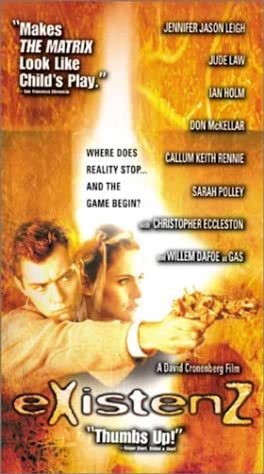
A pre-Matrix Keanu Reeves stars in this cyberpunk movie written by William Gibson. Although the movie is not the greatest the genre has to offer, it does have a cool atmosphere and it's stuck with me over the years. Also, I've got to believe it helped Reeves get the part of Neo, which is influential in and of itself.
A video game creator must seek refuge in his own virtual reality when surviving an assassination attempt. The boundaries between reality and the virtual world become increasingly blurred when the creator and his allies are involved in a dangerous game.
The Thirteenth Floor (1999)
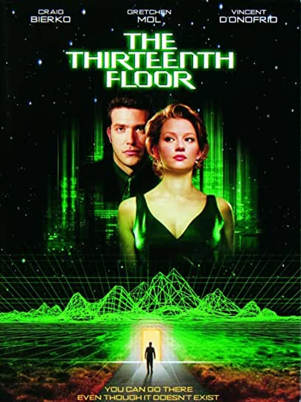
This is another movie that doesn't get a lot of attention because it came out the same year as The Matrix and tackles some of the same themes, but without all the action. It's a cool movie and one I've come to appreciate more and more over time. It's actually based upon the book, Simulacron 3, by Daniel F. Galouye, which was converted into a German TV miniseries in 1973 under the name, World on a Wire. I have yet to watch the TV series, or read the book but they are both on my to-read and to-watch lists.
A man wakes up to find a bloodied shirt at home. His boss was murdered the night before, and he can't remember a thing. This science fiction explores the sinister and frightening possibility of computer-simulated universes where people just believe they are real.
A.I. Artificial Intelligence (2001)
This is Spielberg's take on the story, Supertoys Last All Summer Long, by Brian Aldiss. It's one of Spielberg's darker films and a movie that's stuck with me over time.
The first robot boy programmed to love, David, is adopted by a Cybertronics employee and his wife. Although he is gradually becoming the couple's son, a series of unexpected circumstances makes David's life difficult. Without the full acceptance of humans or machines, the robot boy embarks on a journey to discover his true world.
Minority Report (2002)
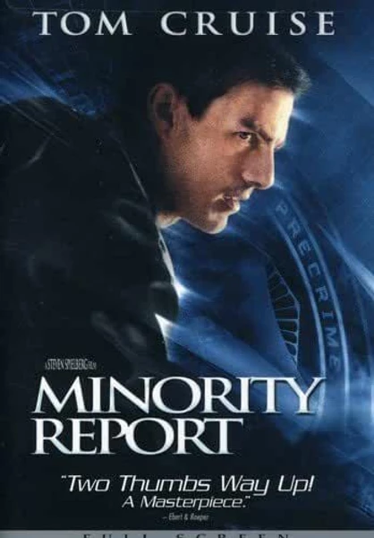
Another brilliant movie spawned from the mind of Philip K. Dick, but this way by means of Spielberg. Just like the movie poster says, this movie is a masterpiece in cinema. That's pretty much all I'm going to say on this movie because, Tom Cruise haters aside, it's fairly well established already.
In the year 2054, there is a system that allows crimes to be accurately predicted, which brings the murder rate down to zero. The problem begins when Detective John Anderton, one of the main agents in the fight against crime, discovers that a murder that he will commit himself has been predicted, calling into question his reputation or the reliability of the system.
A Scanner Darkly (2006)
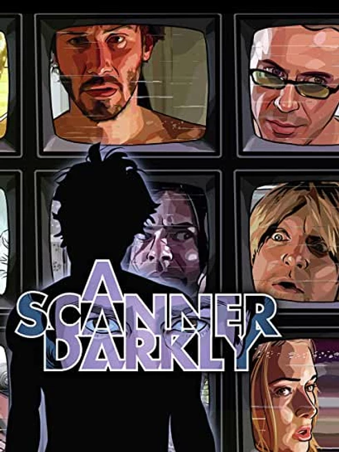
A scanner darkly is based on the Philip K. Dick novel of the same name and filmed using rotoscoping animation. Linklater's decision to film using the rotoscoping technique was a good one; it perfectly captures the feel of the story, which is about a dangerous new psychotropic drug. The story is supported by a great cast and its definitely a movie to be experienced.
Dredd (2012)
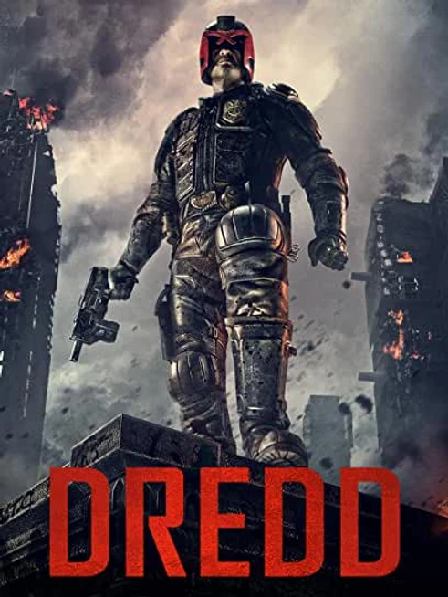
This is a much better and far more faithful take on Judge Dredd than my earlier entry and a thoroughly entertaining and ultra-violent cyberpunk flick. In my opinion, it's also incredibly underrated and well worth a viewing.
In a violent, futuristic city where the police have the authority to act as judge, jury and executioner, a cop teams with a trainee to take down a gang that deals the reality-altering drug, SLO-MO.
Total Recall (2012)
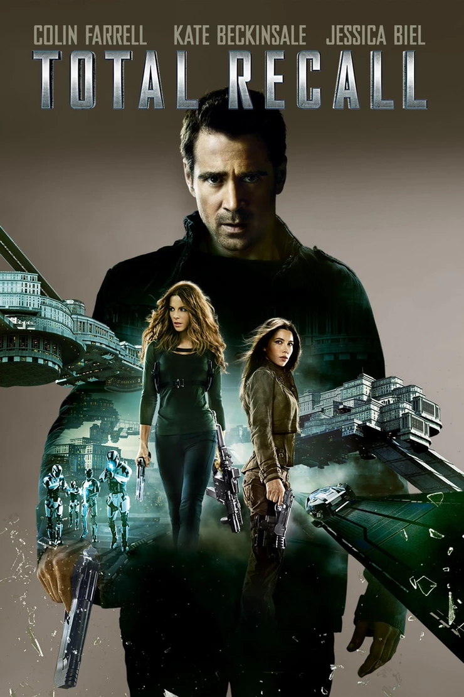
AWhile not as good, nor as impactful to the cyberpunk genre, as the original Arnie adaptation, this one has some really cool tech and some unique set designs. I wasn't a big fan after seeing it in theaters upon original release, but I rented and re-watched it recently and enjoyed it much more on second viewing.
Quaid, a bored worker, is looking for a company that offers a special service: a procedure that transforms dreams into true memories. As his dream was to be a spy, Quaid goes through the procedure, but things don't go as planned.
Looper (2012)
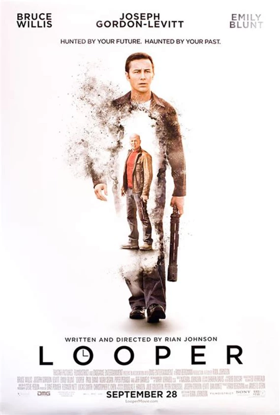
We only catch glimpses of cyberpunk in this time traveler, but the little bit it shows made me want more.
In the futuristic society of 2074, time travel is only available to those who are able to pay for it on the black market. When mobsters want to take someone out, they send the target back to the past, where a hit man known as the "Looper" waits with gun in hand. Joe is one of those hired killers, and he does that job very well. However, complications arise when he discovers that his boss has decided to close the loop and send future Joe back in time to kill him.
Elysium (2013)
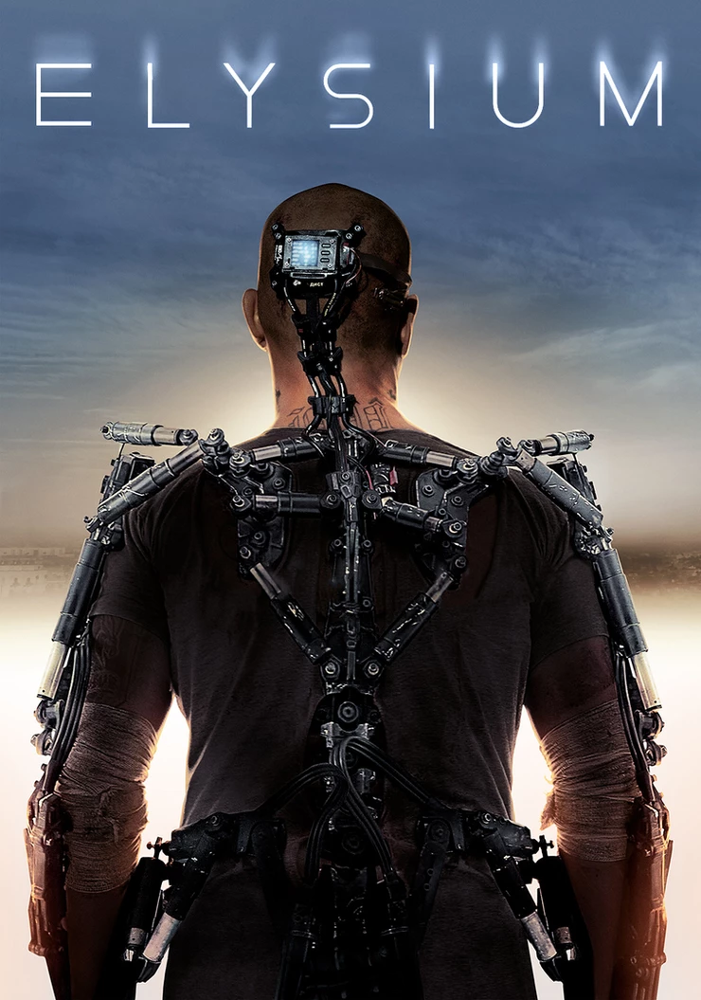
Although this movie would have benefited from a little more subtlety, it's got some really cool stuff in it and a serious cyberpunk vibe. The exoskeleton concept alone makes it worth a viewing.
In the year 2154, the richest live on a space station while the rest of the population lives on a ruined Earth. One man takes on the mission of trying to bring equality to polarized worlds.
Automata (2014)
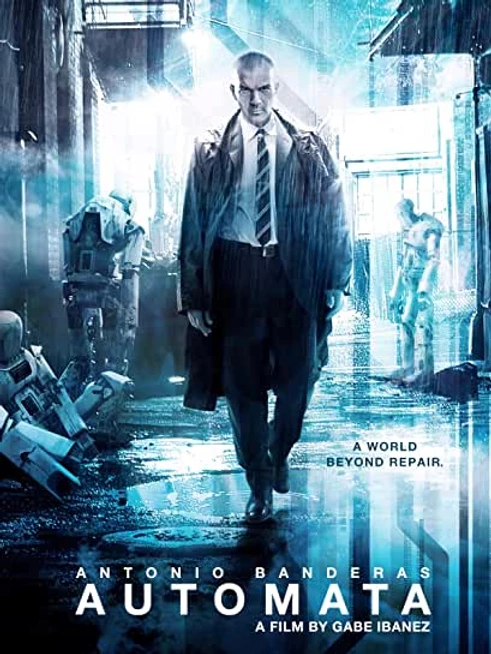
Automata feels like a mashup of Blade Runner with I, Robot. It's not the most original movie on this list, but it's a fun flick with some cool tech and a cool dystopian environment.
Automata is a 2014 English sci-fi action film directed by Gabe Ibáñez and starring Antonio Banderas. The film is co-written by Ibáñez with Igor Legarreta and Javier Sánchez Donate, and co-stars Birgitte Hjort Sørensen, Melanie Griffith, Dylan McDermott, Robert Forster and Tim McInnerny
Chappie (2015)
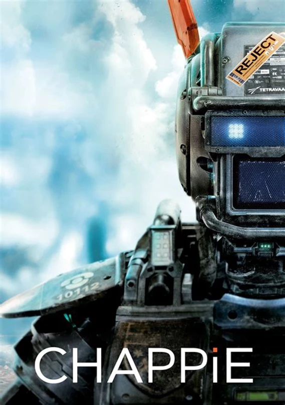
Much like Elysium, the obvious bad guys in this don't have to be portrayed so villainously to get the point across. Also, the casting of Die Antwoord rappers Ninja and Yolandi-Visser is somewhat distracting to the story. All that being said, the robot design and urban wasteland displayed here are pure cyberpunk and deserving of a viewing.
In the near future, human police officers are replaced by ultra-resistant robots, endowed with artificial intelligence. Deon, the scientist who created the machines, steals a faulty model and manages to give it the ability to feel and think for itself. However, authorities are beginning to see Chappie as a danger to humanity and order and will do their utmost to ensure that he is the last of his kind.
Jackrabbit (2015)
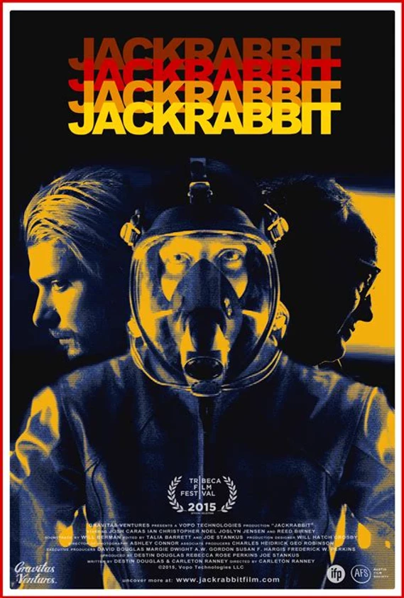
This slow paced indie film isn't your typical cyberpunk movie filled with neon cities and urban decay, but it's mixture of low tech with high tech give it its own unique vibe. It's also got some solid acting on display.
Jack Rabbit is a 2015 American cyberpunk film directed by Carleton Ranney, who co-wrote with Destin Douglas. Josh Caras and Ian Christopher Noel star as dystopian city residents trying to find details about the death of their mutual friend, a computer hacker
Blade Runner 2049 (2017)
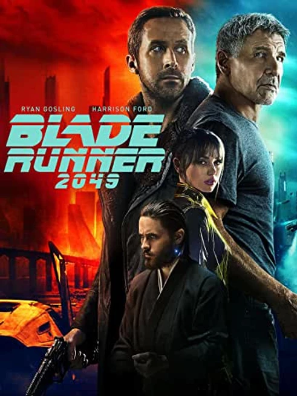
This sequel, 35-years in the making, is one of the few movies to outdo the sequel. It is a true masterpiece that manages to pay tribute to the original while adding layers to the story. It is a perfect movie from beginning to end.
In 2049, replicants – artificial human beings manufactured thanks to the development of bioengineering – were integrated into society to enable the continued survival of the human species, being responsible for doing all the heavy lifting and acting in hostile environments. K (Ryan Gosling), a new model created to obey orders, works as a blade runner for the Los Angeles Police Department, hunting down and "retiring" (killing) old models (rebels hostile to orders) who are still at large. His personal life boils down to talking to his virtual girlfriend, Joi (Ana de Armas), manufactured by Wallace Corporation.
Ready Player One (2018)
Of all the movies on this list, this is likely the one to draw the most ire. And, no, the movie is not nearly as good as the book and took some serious liberties with the source material, but that is to be expected given time constraints and licensing issues. However, on its own, it's a fun movie. This is probably the most light-hearted movie on this list, and most toned down in regards to cyberpunk themes, but I'd remiss if I failed to mention it.
Upgrade (2018)
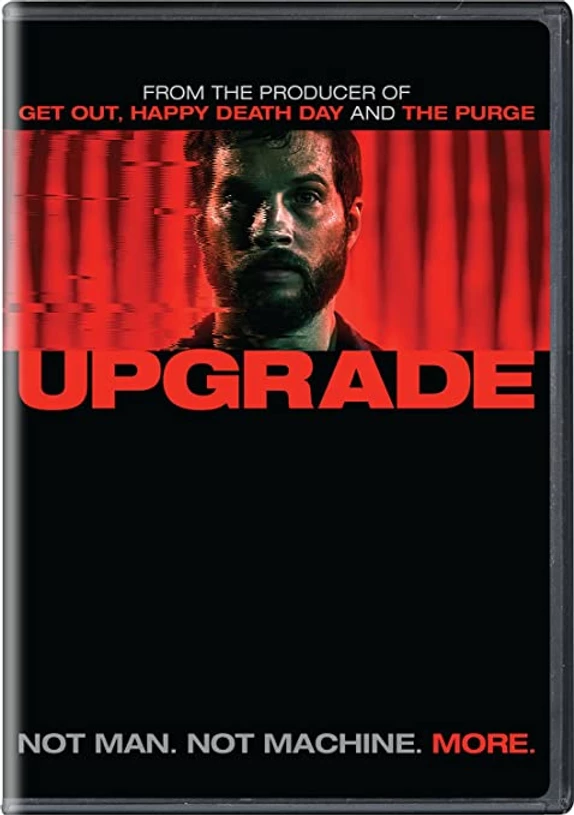
AFrantic pacing combined with plenty of cool action sequences, Upgrade has plenty to offer to the cyberpunk genre. Like Ex Machina and Looper, the low-life cyberpunk elements are in the background, focusing on the more on the high-tech premise, but they are definitely there. I'd like to see another story told in this universe.
In the near future, technology controls almost every aspect of life. But when Gray, a technophobe, has his world turned upside down, his only hope for revenge is an experimental computer chip implant called Stem.
Alita: Battle Angel (2019)
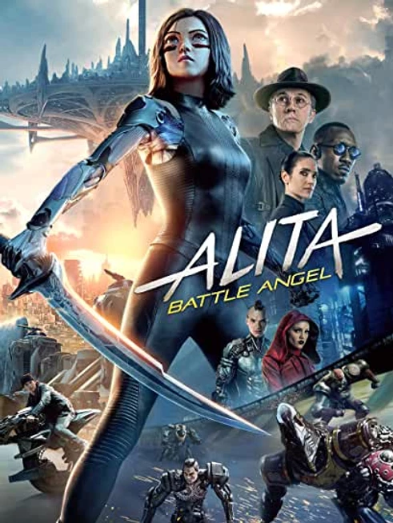
This movie, based on the comic book series, Battle Angel Alita, is a spectacular to behold. It practically nonstop action from start to finish and filled with enough violence to satisfy a Tarantino fan, which is impressive given its PG-13 rating. Although it would have been nice to get a little more character development, the world-building is excellent and made me want more.
Abandoned in an Iron City junkyard, cyborg Alita is found by scientist Dyson Ido. Revitalized, she wakes up with no memory and recognition of the world she finds herself in. Determined to know her past and explore her amazing fighting skills, Alita becomes a powerful bounty hunter, battling deadly forces.